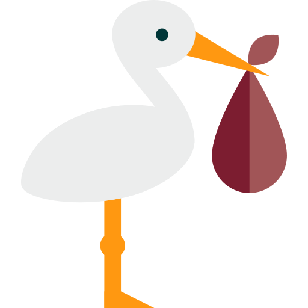

Guarderia Stork
Servicios:
- Horario flexible. Desde las 7:30 hasta las 17:00, de manera ininterumpida el centro está abierto. La hora de entrada y salida se adapta a vuestras necesidades. No hay un horario de entrada o de salida fijo. Siempre dentro del horario de funcionamiento normal del centro.
- Servicio de comedor. Podéis optar entre traer la comida elaborada de casa o utilizar el servico de catering con menús adaptados a cada edad y dietas especiales para celíacos o alergias a determinados alimentos.
- Aula de conciliacion ( 3-6 años). Los antiguos alumnos del centro que actualmente se encuentren matriculados en el CEIP “Prácticas” pueden solicitar el acceso a este servicio. Este servicio comprende: uso del aula matinal (con o sin desayuno), servicio de comedor y siesta en el centro.
- Campamentos (3-6 años). Para esos momentos de vacaciones de los pequeños en los que los padres tienen que trabajar. En las vacaciones de navidad, en las de semana santa y en el mes de julio organizamos diferentes campamentos para antiguos alumnos o niños que tengan hermanos en el centro.
Contacto:
Si le interesa nuestros servicios, puede contactar con nosotros por medio de:
- Correo: info@guarderiastork.com
- Télefono: 654 32 19 87 00
- Redes sociales. (Abajo link)
Otras guarderias de interes:
- SOLYLUNA
- La casita
- Wonderland
Puedes seguirnos en: